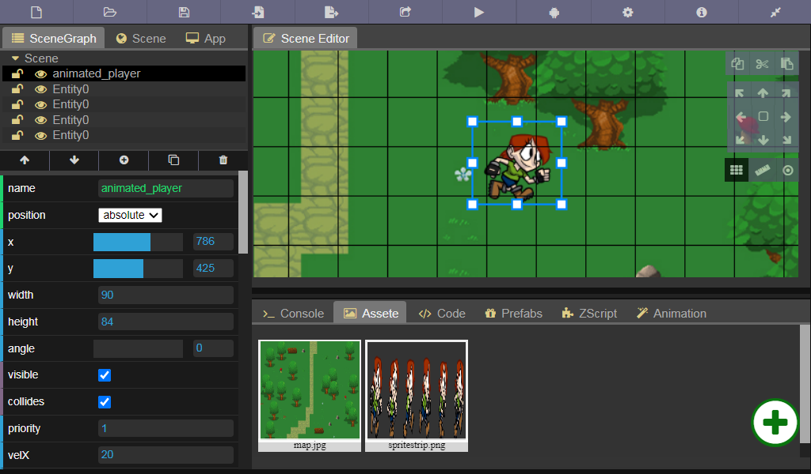

ZICA Engine
Try it

2D cross-platform game engine
ZICA Engine is a simple cross-platform game engine to create 2D games & apps without programming. It provides a comprehensive set of common tools, so that users can focus on making games easy (with just a few clicks). But also supports scripting for advanced users. Games can be exported in one click to a number of platforms, including desktop platforms (Linux, Mac OSX, Windows), mobile (Android) and web-based (HTML5) platforms.

Features

Rapidly develop your ideas whit ZScript event system

To do...
- [x] Windows Mac Linux build
- [ ] Image & audio editor
- [ ] RPG map editor
- [ ] Adroid & IOS build
- [ ] Admob integration
- [ ] Physic engine
- [ ] Website and prefabs shop
- [ ] Demos
- [ ] Docs & tutorials
- [ ] Undo/Redo
- [ ] Serialization
- [ ] GUI components
- [ ] Timeline editor
- [ ] More actions and behaviours
Code example

License
-
ZICA Enigne uses a MIT license that allow for commercial usage of the platform without any cost.
-
The project build on top of open source libraries monaco-editor, dat.gui, litegui.js, javascript-sandbox-console, nwjs.io, copperlicht